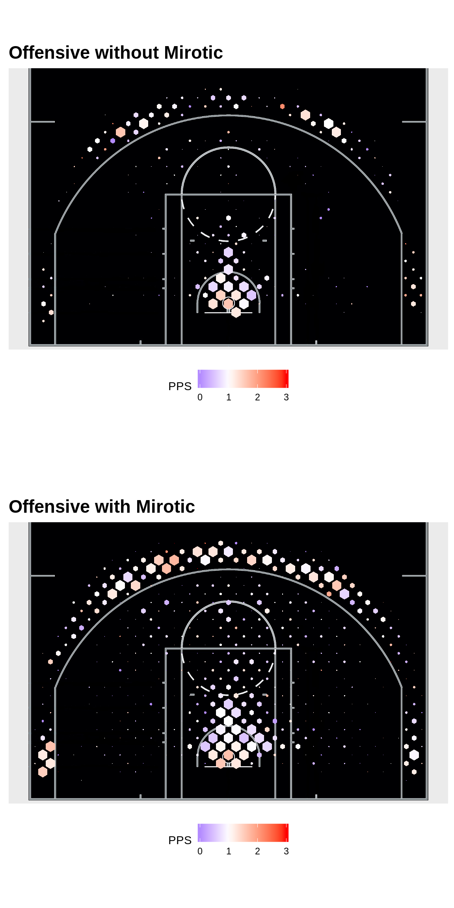
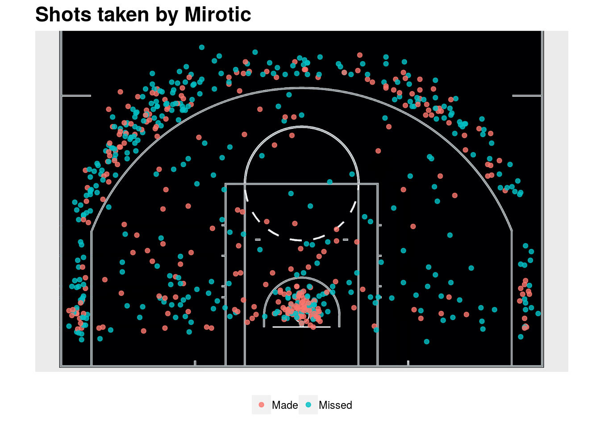

Does the recent Bulls winning streak mean something?
Derek Corcoran and Nick Watanabe
December 20, 2017
Shot charts with and without Nikola Mirotic
Since Nikola Mirotic has just played 6 games, there are too few shots to make a passable shot chart for the Chicago Bulls with him, so we will have to rely on team stats to figure what is going on.

Stats without Nikola Mirotic
As seen in the table below, before Nikola Mirotic came back, the Bulls ranked 27th in the league in Adjusted points per shot (APPS), and then moved to a more respectable 14th after his return. The defense has not changed all that much, but they improved a tick going from being 15th to 13th in adjusted points allowed per shot.
| TEAM_NAME | ShotPct2Pts | ShotPct3Pts | PercentageOf2s | PercentageOf3s | PropShot | PPS | AdjPPS | Rank |
|---|---|---|---|---|---|---|---|---|
| Chi | 0.457 | 0.342 | 0.64 | 0.36 | 1.037 | 0.954 | 0.989 | 27 |
| DefTeam | ShotPct2Pts | ShotPct3Pts | PercentageOf2s | PercentageOf3s | PropShot | PPS | AdjPPS | Rank |
|---|---|---|---|---|---|---|---|---|
| Chi | 0.518 | 0.382 | 0.65 | 0.35 | 0.964 | 1.075 | 1.036 | 15 |
Stats with Nikola Mirotic
| TEAM_NAME | ShotPct2Pts | ShotPct3Pts | PercentageOf2s | PercentageOf3s | PropShot | PPS | AdjPPS | Rank |
|---|---|---|---|---|---|---|---|---|
| Chi | 0.486 | 0.361 | 0.65 | 0.35 | 1.019 | 1.011 | 1.03 | 22 |
| DefTeam | ShotPct2Pts | ShotPct3Pts | PercentageOf2s | PercentageOf3s | PropShot | PPS | AdjPPS | Rank |
|---|---|---|---|---|---|---|---|---|
| Chi | 0.541 | 0.366 | 0.62 | 0.38 | 0.981 | 1.088 | 1.067 | 20 |
Chicago has diminished the percentage of 3-point shots taken since Mirotic came back, moving from 36% of their shots being taken from beyond the arc to only 26%. Overall, the main change for them has been the shooting efficiency, as their 2-point shooting percentage rose from 45.7% to 51.5% and their 3-point pct from 34.2% to 38.2%.

In this season, Mirotic is shooting an effective field goal percentage of 63%, while having a career 51.1% eFG%. This includes him making over 50% of his 3’s, when he is a career 35.5% 3-point shooter. All this while having a 28% usage rate, the highest in his career by far, and shooting all over the court as we see above. If Mirotic can maintain this level of production and efficiency, the Bulls could certainly have a better season than predicted. However, all this points to an unsustainable efficiency, and a possible regression to the mean for the Nikola and the Bulls.

Copyright © 2017 Cienciaustral, Inc.  All rights reserved.
All rights reserved.